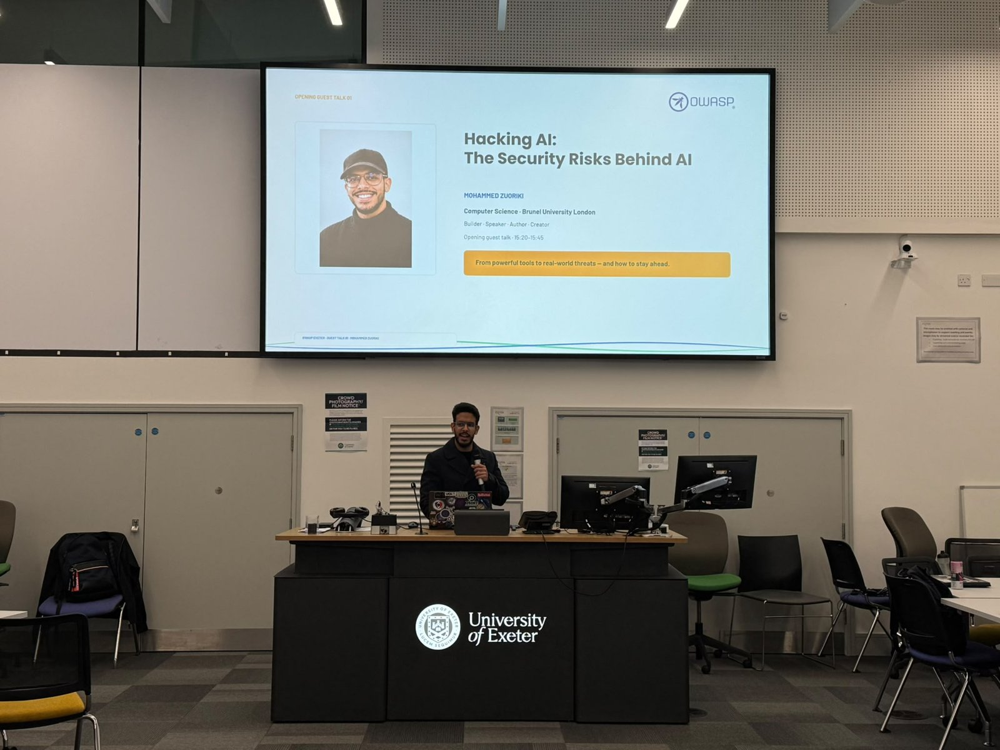

Hacking AI:
The Security Risks Behind AI#
How AI-powered applications get broken, and why every developer and curious user needs to care. From powerful tools to real-world threats, and how to stay ahead.
About this publication#
At the start of the 2026/2027 academic year, the OWASP University of Exeter Student Chapter opened its cybersecurity programme with a guest talk from Mohammed Zuoriki, a Computer Science with Cybersecurity student at Brunel University London.
The talk, Hacking AI: The Security Risks Behind AI, looked past traditional code vulnerabilities to a newer class of problem: conversational exploits that persuade AI systems to misbehave. This site is the written companion to that session. It covers the ideas, the slides and photos from the evening, and resources for anyone who wants to keep learning.

The talk at a glance#
Why it matters#
LLMs have moved from study helpers to production systems with write access to real data.
A very eager intern#
Fast, well-read, eager to please, and with no situational awareness.
Five ways to break an AI app#
Prompt injection, jailbreaks, data leaks, poisoned data and insecure actions.
How defenders fight back#
Least privilege, untrusted input, human oversight and adversarial testing.
When natural language becomes the execution engine, words turn into untrusted inputs.
Key takeaways#
- AI changes the attack surface, not the fundamentals. Untrusted input, excessive privilege and missing oversight are old problems in a new form.
- Attackers persuade; they don't buffer-overflow. No assembly or shellcode, just carefully worded text.
- The model can't reliably tell who is in charge. Developer rules and attacker instructions arrive in the same context window.
- Secure it before someone else tests it. Design for least access, treat everything the model reads as untrusted, keep a human in the loop and red-team early.
Event gallery#
Photos from the evening at the University of Exeter.
About the speaker#
Competitive programmer, security researcher, author and creator.
Further resources#
OWASP Top 10 for LLM Applications and safe places to practise.